Two oceans, one signal
ENSO and the IOD are patterns of sea surface temperature that swing between warm and cool phases every few years. Neither stays in its own ocean basin — both reorganise wind and rainfall patterns across entire hemispheres through what climate scientists call teleconnections.
- ENSO alternates between El Niño (warm central-eastern Pacific) and La Niña (cool Pacific) states, shifting rainfall and temperature patterns across the tropics and beyond.
- The IOD alternates between a positive phase — warmer water in the western Indian Ocean, cooler water off Sumatra — and a negative phase, typically peaking in Southern Hemisphere spring.
- The two are not independent: positive IOD and El Niño phases often co-occur, and each can reinforce the other's regional impacts.
- Research since the late 2010s has shown that ENSO's atmospheric teleconnections are themselves shifting — in pattern and strength — as the ocean's mean state warms, which means the historical map of "where ENSO causes what" is not fixed.
A shared driver, scattered disasters
Because ENSO and the IOD operate at planetary scale, the same ocean phase can raise disaster risk in several disconnected regions at once — a pattern climate-risk researchers have systematically catalogued.
A 2018 review examined peer-reviewed evidence linking extreme atmospheric hazards across sixteen regions of the world to eight major climate drivers, ENSO and the IOD chief among them. Its central point for disaster-risk management: an organisation or insurer exposed across multiple regions can face concentrated, simultaneous losses when a single teleconnection driver moves into its hazardous phase — floods in East Africa, drought in Indonesia, and bushfire risk in southeast Australia can all trace back to the same swing in Indian Ocean temperature.
Compound events: when ENSO and the IOD line up
Individually, ENSO and IOD phases raise the odds of extreme weather. When a warm-Pacific ENSO state and a positive IOD event occur in the same year, their effects on rainfall deficit and temperature compound rather than simply add — and this is exactly what happened in the year that set up Australia's most destructive fire season on record.
Australia's 2019–2020 Black Summer
The link between a positive IOD and southeast Australian bushfire risk was first established in the aftermath of the 1983 "Ash Wednesday" and 2009 "Black Saturday" fires. A 2009 study found that of 21 significant Victorian bushfire seasons between 1950 and 2009, 11 had been preceded by a positive IOD event — establishing the IOD as a stronger bushfire precursor for the region than El Niño alone.
A decade later, 2019 combined a record positive IOD with a westward-shifted, central-Pacific-type El Niño; research published in 2021 showed that this specific spatial combination of Indo-Pacific warming — not either driver in isolation — explained Australia's worst drought in four decades. A companion 2021 review found that Australia's hottest and driest year on record left exceptionally dry fuel loads across the landscape, and that the compounding of two or more climate-variability modes in their fire-promoting phases at once has historically raised the odds of large southeast Australian forest fires. A separate large-ensemble attribution study quantified just how extreme the resulting conditions were: the combined drought and fire-weather susceptibility of 2019 was unprecedented in the observed record, with roughly a 0.5% likelihood — equivalent to a 200-year return period — in the current climate, a probability that rose substantially once the simultaneous states of ENSO, the IOD, and the Southern Annular Mode were accounted for.
Southeast Australia
The analysis focuses on New South Wales and Victoria, where century-long fire history records make it possible to cross-check climate preconditioning against decades of documented burn events.
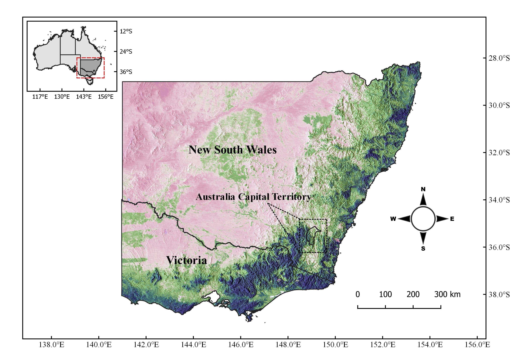
Sea surface temperature anomalies, 2010–2019
Before land ever dries out, the ocean has already shifted. The decade's SST anomalies in the Indian and Pacific basins set the stage for what follows.
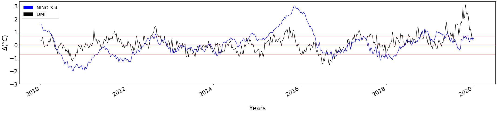
| Fire Season | IOD Phase | ENSO Phase | Climate-Mode Combination |
|---|---|---|---|
| 2010–11 | Negative IOD | La Niña | Negative IOD + La Niña |
| 2015–16 | Positive IOD | El Niño | Positive IOD + El Niño |
| 2016–17 | Negative IOD | La Niña / Modoki | Negative IOD + La Niña |
| 2019–20 | Positive IOD | ENSO Neutral | Positive IOD + ENSO Neutral |
Classification basis: IOD phases follow the Australian Bureau of Meteorology historical IOD classification, while ENSO phases are based on the NOAA Oceanic Niño Index (ONI). The 2016–17 Modoki designation is treated separately from the standard ENSO classification.
SSTA time series — Pacific & Indian Ocean
Visual comparison of the sea surface temperature animations shows stark thermal contrasts across basins. In 2010–11, a widespread cooling pattern across the equatorial Pacific visually correlates with continental-scale moisture access. In contrast, the 2019–20 sequence highlights an intense warming spread across the western and eastern Pacific corridors, visually aligning with shifts in oceanic thermal energy prior to the fire season.
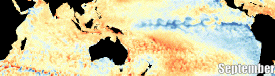
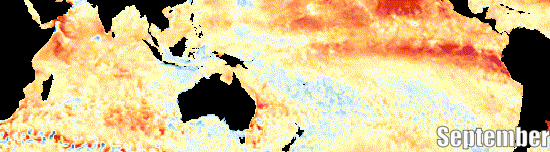
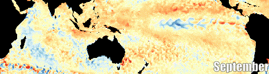
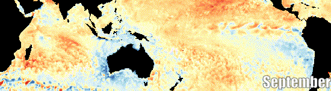
Land surface temperature — SE Australia
The thermal maps display a clear visual shift in land radiance across the four years. The 2010–11 season is dominated by cooler tones (blues and greens) across the terrain. By 2019–20, the color profile transitions entirely to harsh yellows and warm tones across New South Wales and Victoria, indicating persistent surface heat retention
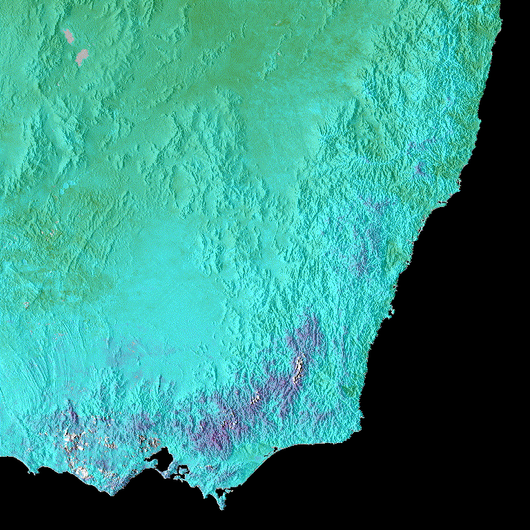
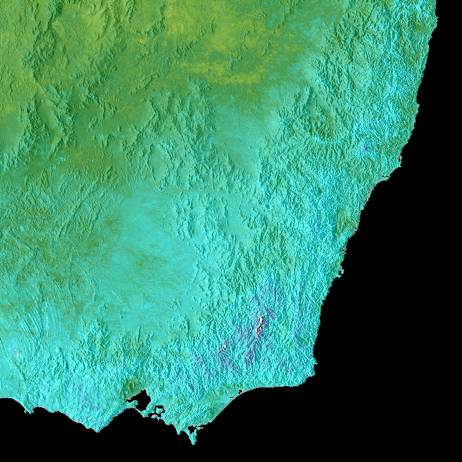
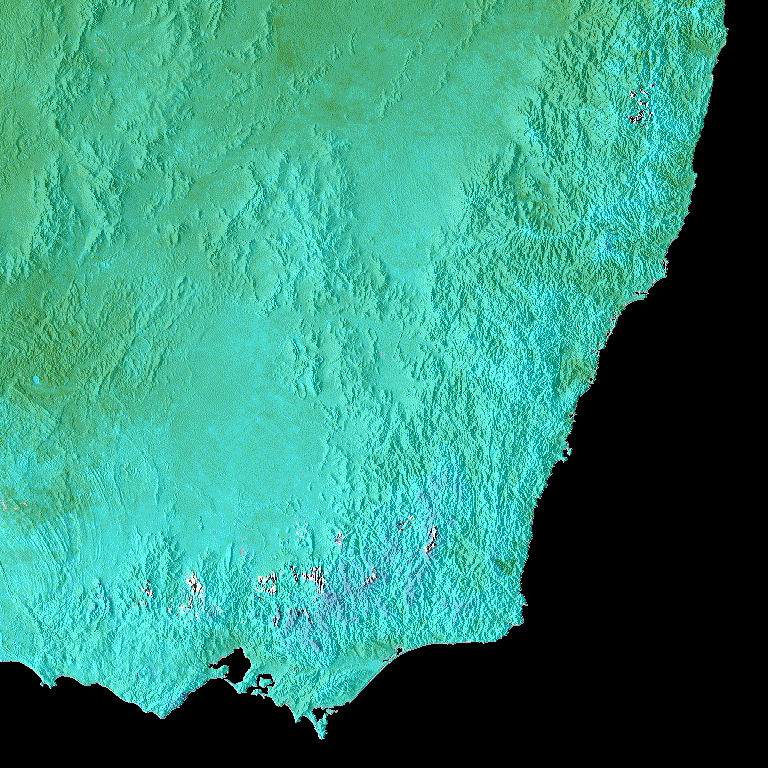
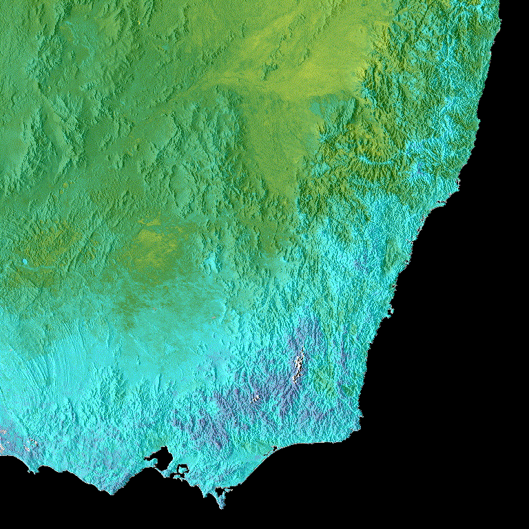
Keetch–Byram Drought Index — SE Australia
Visualizing cumulative dryness reveals an escalating spatial footprint of drought. While 2010–11 shows extensive low-index (blue/moist) zones, the 2019–20 map shows the entire interior and eastern board saturated in deep crimson (dry), illustrating maximum soil moisture depletion.
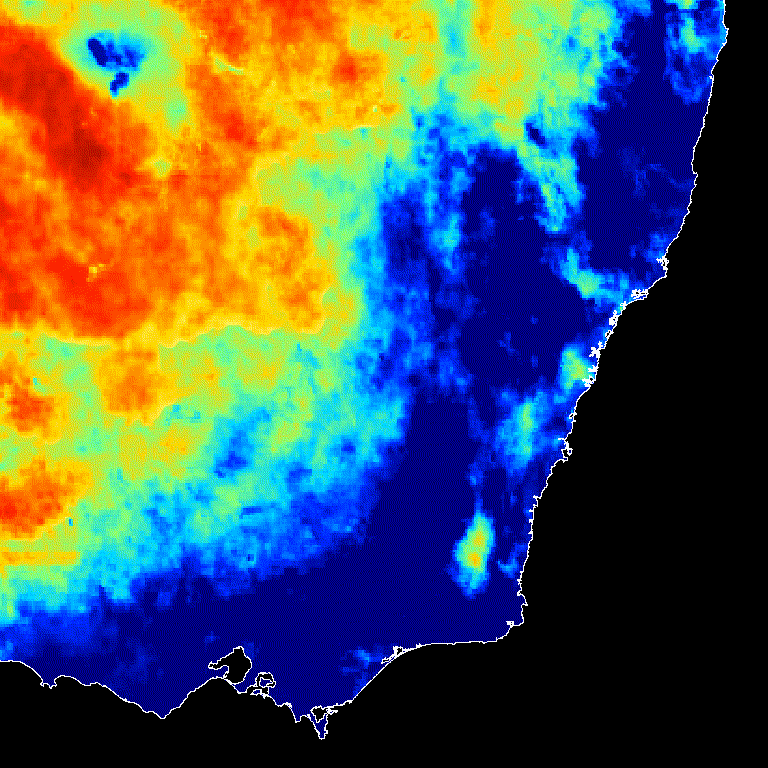
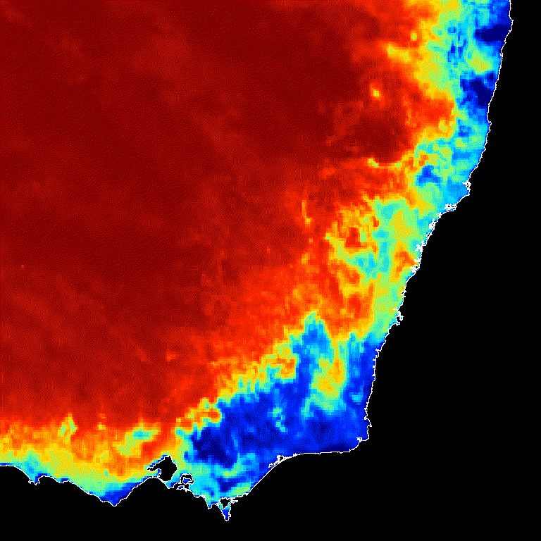
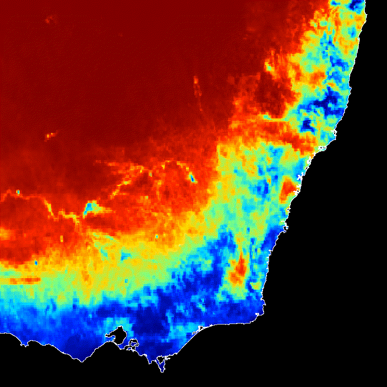
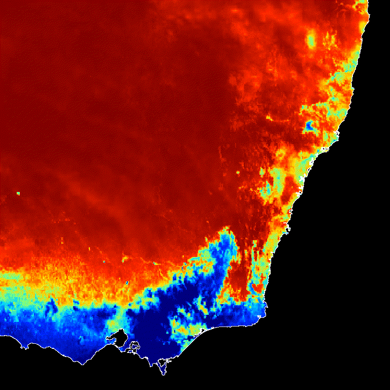
NDVI time series — SE Australia
Vegetation greenness across the same four fire seasons, showing progressive vegetation stress ahead of ignition.
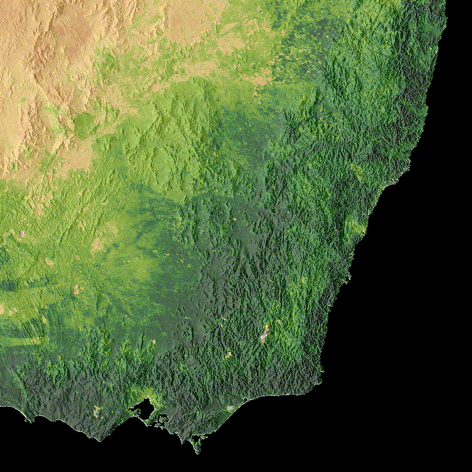
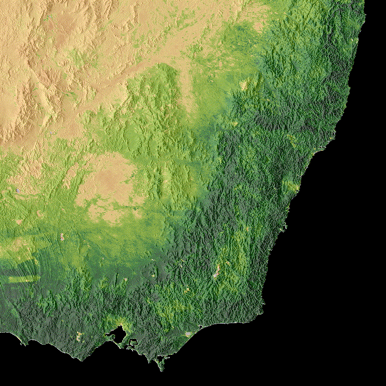
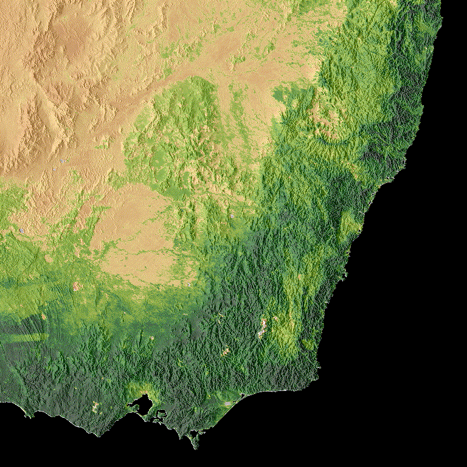
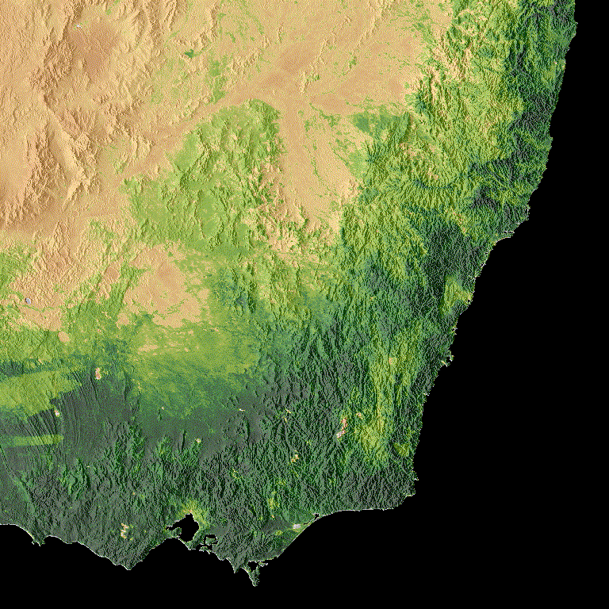
Figure 4 — Land cover classification
Southeast Australia's land cover in 2018, classified using the IGBP method from MODIS (MCD12Q1) — the fuel base that the fires below burned through.
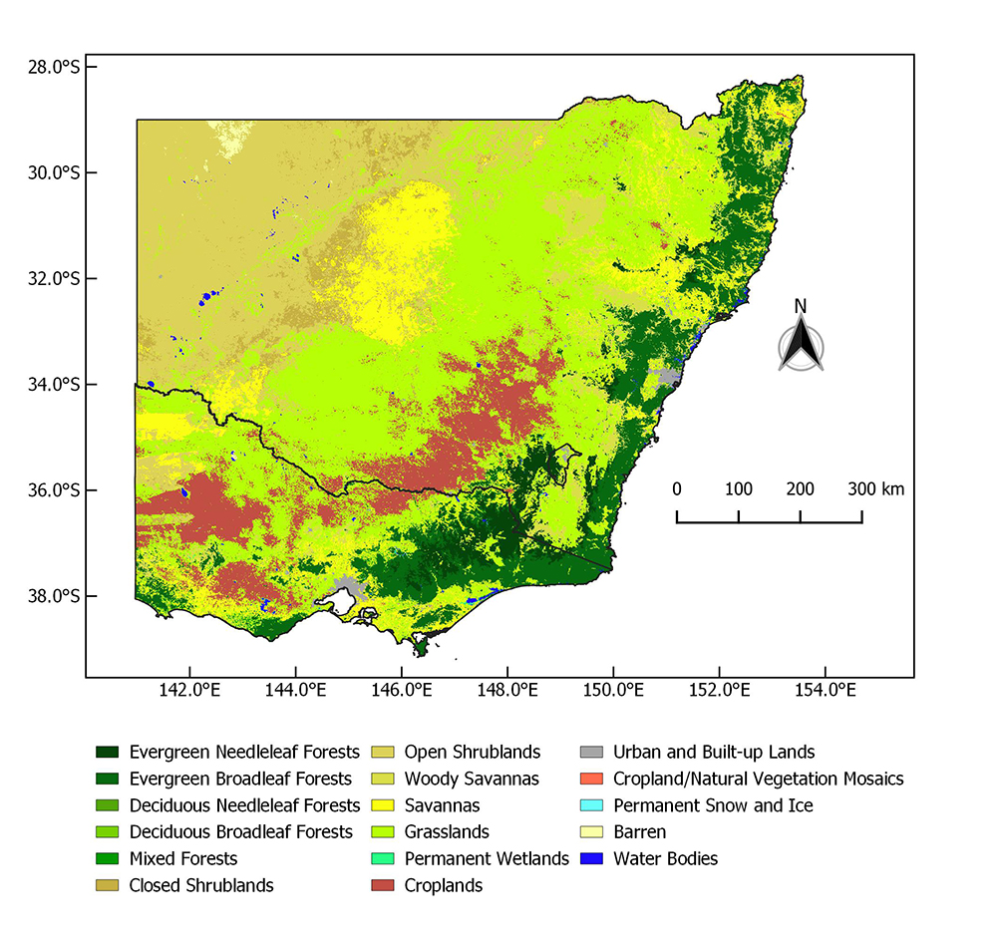
Fire time series — SE Australia
Visual inspection of the FIRMS anomaly layers ties the preceding environmental indicators together. While the 2010–11, 2015–16, and 2016–17 maps remain largely blank, the 2019–20 panel shows dense, concentrated clusters of red fire pixels tracking precisely along the eastern temperate forest boundaries.
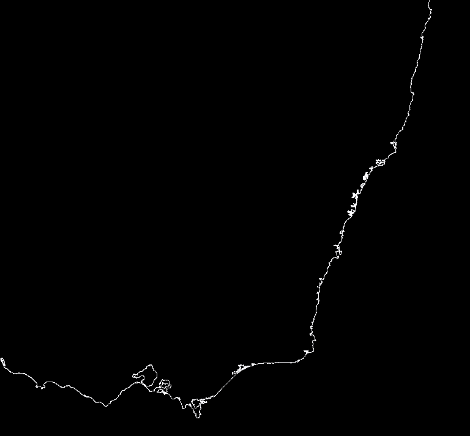
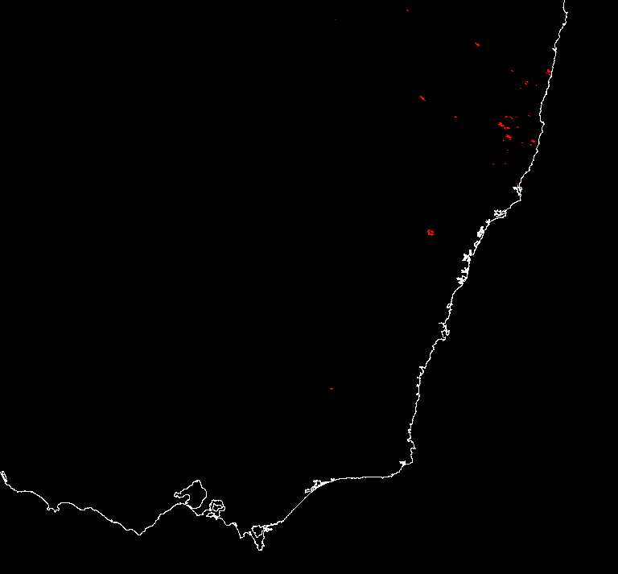
Ocean to ember — and beyond Australia
Across four of Southeast Australia's most significant recent fire seasons, the same sequence holds: a warm anomaly builds in the Indian and Pacific Oceans, land surface temperatures and drought indices climb in step, vegetation dries and stresses, and burn area follows. The 2019–2020 season shows what happens when that sequence hits its worst-case alignment — a record positive IOD and a specifically positioned El Niño compounding each other into Australia's driest year on record.
This is not a uniquely Australian story. The same ocean phases that dried out southeast Australia in 2019 were, in that same window, altering flood and drought risk from East Africa to Indonesia — and as of August 2026, the World Meteorological Organization's outlook points to a strong El Niño intensifying across the Pacific and persisting into early 2027, a live reminder that this teleconnection chain isn't confined to case studies. It's active right now.
References
- Cai, W., Cowan, T., & Raupach, M. (2009). Positive Indian Ocean Dipole events
precondition southeast Australia bushfires. Geophysical Research Letters, 36, L19710.
doi.org/10.1029/2009GL039902 - Zhang, L., et al. (2021). Tropical Indo-Pacific compounding thermal conditions drive
the 2019 Australian extreme drought. Geophysical Research Letters, 48, e2020GL090323.
doi.org/10.1029/2020GL090323 - Abram, N. J., Henley, B. J., Sen Gupta, A., ... Boer, M. M., et al. (2021).
Connections of climate change and variability to large and extreme forest fires in southeast Australia.
Communications Earth & Environment, 2, 8.
doi.org/10.1038/s43247-020-00065-8 - Squire, D. T., Richardson, D., Risbey, J. S., et al. (2021). Likelihood of
unprecedented drought and fire weather during Australia's 2019 megafires. npj Climate and
Atmospheric Science, 4, 64.
doi.org/10.1038/s41612-021-00220-8 - Steptoe, H., Jones, S. E. O., & Fox, H. (2018). Correlations between extreme
atmospheric hazards and global teleconnections: Implications for multihazard resilience. Reviews of
Geophysics, 56(1), 50–78.
doi.org/10.1002/2017RG000567 - Yeh, S.-W., et al. (2018). ENSO atmospheric teleconnections and their response to
greenhouse gas forcing. Reviews of Geophysics, 56(1), 185–206.
doi.org/10.1002/2017RG000568 - World Meteorological Organization (2026). El Niño/La Niña Update — current outlook
indicating a strong El Niño developing across the Pacific through early 2027.
wmo.int — El Niño/La Niña Updates
Data & tools
All remote-sensing layers were processed in Google Earth Engine. Grateful to the following agencies and archives for open access to the underlying data.